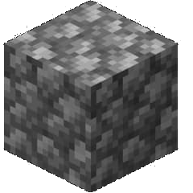
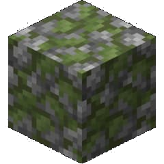
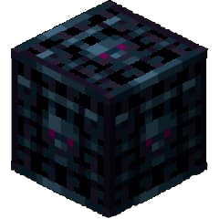
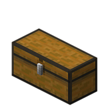

| Скарбниця |

|
| Биом Будь який |
| Зкладається з |
| Булижнік |
| Замшелий булижнік |
| Спаунер |
| Сундук |
| Перша Поява Infdev (25 червня 2010, 2) |
Скарбниця
Скарбниця (або Данжі , від англ. Dungeon - «підземелля») - це підземна натуральна структура , що представляє собою маленьку кімнату з замшілий і звичайного кругляка з скринями та спаунером мобів .
Властивості
Скарбниця — приміщення площею 5x5, 5x6, 5x7 або 7x7 і висотою 4 блоки, обмежене стінами і підлогою (без стелі) з кругляка і моховитого кругляка. В скарбниці генерується 0-3 скрині (згенерувати поруч можуть об'єднатися в велику скриню) і один спавнер мобів. Скарбниці найчастіше генеруються в порожнинах під землею, але іноді вони можуть з'явитися вище рівня моря, наприклад, в горах. У стіні скарбниці проробляється отвір-вхід в сторону порожнини, у якій скарбниця згенерувалась. При генерації скарбниці практично не враховується рельєф, тому вони часто трапляються в ненормальному вигляді: без статі, під водою або лавою, засипані гравієм і/або піском, під шаром льоду. В результаті таких аномалій скарбниця може втратити скрині і спавнера. Також скарбниці генеруються всередині інших натуральних структур — в каньйонах, фортецях, покинутих шахтах. Спавнер мобів виступає в ролі «вартового», який охороняє скарбницю, нескінченно спавном мобів до тих пір, поки гравець не зруйнує або не "вимкне» спавнер, освітивши простір навколо нього. Спавнер завжди розташовується в центрі скарбниці, скрині ж генеруються уздовж стін. Імовірність появи спавнера зомбі — 50%, скелетів — 25%, павуків — 25%.
Тактика захоплення скарбниці
Оскільки скарбниця добре охороняється ворогами, які постійно з'являються з спавнера, то атака «в лоб» зажадає багато зусиль, навичок, їжі і стріл. Існує кілька ефективних методів захоплення скарбниці:
- Тунель під спавнер. Можна прорити під скарбницею тунель так, щоб дістатися до спавнера мобів, знищити його (але при цьому втрачається можливість використовувати скарбницю як мобоферму), а потім розгорнути атаку проти решти мобів.
- Підкоп. Можна в дні скарбниці вирити невелику дірку шириною 1 блок і довжиною 1 блок, куди будуть падати моби і застрявати там. Тоді ви легко зможете вбити їх по одному в ближньому бою. З павуками такий фокус не пройде.
- Затоплення лавою. Спочатку потрібно прокопати тунель під кожен скриню і забрати з нього все корисне. Далі, щоб дістатися до моховитого кругляка, потрібно вилити зверху в скарбницю відро (або кілька) лави і почекати, поки моби помруть. Потім прибираємо джерело лави — ставимо блок замість нього або набираємо знову в відро, спускаємося вниз і беремо собі коштовне каміння.
- Освітлення. Навколо скарбниці проробляється добре освітлений тунель, в стінах скарбниці створюються отвори, через які всередину поміщаються факели, що позбавляють монстрів можливості спавнитись. Через ці ж отвори усуваються монстри.
- Щілина. Якщо скарбниця розташовується до гравця стелею, а не стіною, захопити її досить легко. Можна прокопати один блок і використовувати скриню на цій відстані, якщо він досить близько. Монстри не зможуть атакувати вас, але скелети можуть і потрапити, тому це не означає, що меч можна залишити вдома. На жаль, камінь таким чином не візьмеш.
- Хитрість. При виявленні скарбниці, треба поставити на паузу гру, і вибрати складність «Мирно». Після чого забрати речі зі скарбниці. У режимі Hardcore, якщо складність заблокована або ви на сервері, де ви не адміністратор, не пройде. Багато гравців вважають даний метод чітерскім.
- Стороння допомога. Йдете на захоплення скарбниці? Візьміть хоча б 2 блоки снігу і 1 гарбуз. Побудуйте снігового голема, і він легко відверне від вас будь-яких мобів, а значить, можна йти в скарбницю хоч з порожнім інвентарем!
- Хороший шахтар. Якщо ви поганий воїн, але відмінний шахтар, прокопати над спавнером вертикальний тунель шириною 3 на 3 блоки. На світлі моби перестануть з'являтися, зомбі і скелети згорять, а павуки втратять до вас всякий інтерес.
- Чари. Візьміть з собою в скарбницю вибухові зілля лікування. Скелетів і зомбі це вб'є, а вас вилікує. Врахуйте, що павуків зілля лікування так само, як і вас, лікує.
- Веселий підривник. Візьміть з собою в скарбницю ТНТ. Він вб'є всіх мобів, підірве спавнер, а з підірваних скринь випадуть речі, які просто потрібно підібрати.
- Танк. Необхідні хороша броня, меч (краще — діамантний) і факели. Прокопати поруч з скарбницею невелику порожнину, куди ви зможете сховатися. Далі стрибайте в скарбницю і, не звертаючи увагу на мобів, ставте факел прямо на спавнер. Після цього або добиваєте залишилися супротивників, або тікайте в заздалегідь зроблену порожнину для регенерації здоров'я.
Пошук скарбниці
Скарбниця ще і тут є!
Ознакою скарбниці можуть бути звуки чотирьох-п'яти однакових монстрів, що доносяться з одного боку — хрип зомбі, шипіння павуків або бренькання кісток скелетів. Нерідко скарбниці розташовуються поблизу поверхні під піском, який після генерації ділянки карти обвалюється всередину. Прямокутне поглиблення в піску або гравію характерного розміру майже завжди вказує на наявність скарбниці. При підозрі на наявність скарбниці поблизу можна точно визначити її місце розташування за допомогою графічної помилки, яка полягає в тому, що при перемиканні відстані огляду можна побачити крізь стіни частки, в тому числі і вогонь, що горить всередині спавнера. Скарбниці можна легко і швидко знайти за допомогою програми Cartograph. Щоб знайти їх, потрібно запустити Cartograph, вибрати Only mode і вказати номер блоків: моховитий кругляк або кругляк. Потім зробіть зображення в звичайному режимі. Збережіть зображення, накладіть один на одного і йдіть до вказаних місцях. Також є спеціальні текстур-паки для пошуку скарбів. Є невеликий шанс потрапити до скарбниці через портал з Нижнього світу.
Додатково
- Скарбниці будуть генеруватися, навіть якщо опція «Generate structures» при створенні нового світу була виключена.
- Надзвичайно рідко скарбниці можуть з'явитися на нижчих рівнях, вирізаючи простір в корінній породі. Якщо проламати підлогу такої скарбниці, можна виявити порожнечу.
- Скарбниця може з'явитися у настільки малих порожнин, що входу у неї може і не бути.
- Зрідка можуть згенерувати подвійні скарбниці в чотири скрині і два спавнера — спочатку генерується перша скарбниця, потім у цій «порожнини» інша. Стіна першої скарбниці видаляється, у другій скарбниці в стіні проробляється вхід в першу.
- Вміст скринь задається зерном.
- Дуже рідко, але все-таки є шанс при створенні карти Заспавнени в скарбниці.
- У суперплоского скарбниці генеруються тільки в шарах породи (камінь, піщаник і ін.) В безпосередній близькості від покинутих шахт. Якщо порожнин в суперплоского не буде або покинуті шахти будуть висіти в повітрі — скарбниці не зможуть генерувати
- Якщо знайти скарбницю в джунглях, на стелі і стінах скарбниці можуть згенерувати ліани.
- Якщо знайти скарбницю в пустелі, є великий шанс що вона НЕ буде засипана. Це дає стимул шукати скарбниці в пустелі.
- ноді скрині генеруються поруч, утворюючи 1 велику скриню.
- Надзвичайно рідко скарбниця може згенерувати з занедбаної шахтою і з фортецею одночасно.
- В поодиноких випадках у скарбниці може бути відсутнім спавнер мобів. Це вкрай рідкісне явище, викликане помилкою генератора.
Помилки
Питання, що стосуються «Скарбниця», ведуться в сховищі звітів про помилки. Повідомте про проблеми там.
Дрібниці
- З версії 12w22a скарбниця — не єдина структура, де можна знайти замшілий камінь, він також тепер з'являється в храмі в джунглях і в тайзі.
- З версії 13w18a в скринях скарбниці генеруються бирка і кінська броня.